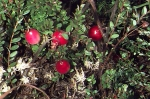
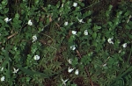
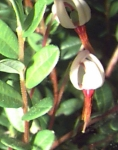
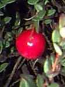
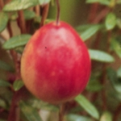
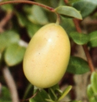
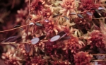
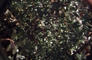

| Taxonomy | Large Cranberry Vaccinium macrocarpon Ait. ERICACEAE (Heath Family) |
 |
| Synonyms | American cranberry, marshberry, sourberry, bounceberry | |
| Description | Along with blueberry (Vaccinium corymbosum) and grape (Vitis labrusca), American cranberry is one of three fruits native to New England that have been cultivated successfully. Cultivars of V. macrocarpon are the staple of the cranberry industry, but the "ruby of the bog" still grows wild in natural peatlands. Large cranberry is a low (to 12"), trailing, evergreen shrub. Cranberry flowers resemble the head and neck of a crane; hence, the name cranberry comes from "crane's berry." |  |
| Wetland indicator status | OBL | |
| Leaves | Evergreen, alternate, simple, entire, 1/4 - 3/4" long; oblong to elliptical, rounded tip; leathery, shiny, dark green above; underside is pale; maroon-brown in winter. | |
| Flowers | Pale pink, small (1/2"); long orange stamens and red style protrude "beaklike" from the center of four recurved petals; single or in pairs on slender stalks that arise from mid- to lower leaf axils of the upright branches. |  |
| Flowering Period | June-August | |
| Fruit | Berry, bright red, 1/2-7/8" wide; shape varies: round, pear-shaped or oval-oblong; edible, tart -- the cultivated cranberry. |  |
| Fruiting Period | September-November | |
| Habitat | Bogs and acidic peatlands, interdune swales. | |
| Range | Newfoundland to Manitoba; south to Virginia, Illinois, Wisconsin and Minnesota; mountains to North Carolina and Tennessee. | |
| Associates | Sphagnum mosses, leatherleaf (Chamaedaphne calyculata), sheep laurel (Kalmia angustifolia), swamp azalea (Rhododendron viscosum), sweet gale (Myrica gale), three-way sedge (Dulichium arundinaceum) and other sedges. | |
| Similar Species | Small cranberry (Vaccinium oxycoccus) grows in more acidic, less nutrient-rich habitats and has smaller leaves and berries than large cranberry. The leaves of small cranberry are less than 1/4" long, have pointed tips, white undersides, and noticeably inrolled margins. The leaves of large cranberry are 1/4 -- 3/4" long, have rounded tips, pale undersides, and the margins do not curl. One good diagnostic is location of the flower/fruit stalks: on large cranberry, the stalks arise from mid-branch; on small cranberry, flower stalks are terminal, borne at the tip of an upright branch. Creeping snowberry (Gaultheria hispidula) has white berries and white, bell-shaped flowers; its short-stalked leaves smell like wintergreen when crushed. |  Small Cranberry |
| Seasonal Diagnostics |
|
 |
{kind=link}
{kind=link}
{kind=link}
{kind=link}
{kind=link}
{kind=link}
{kind=link}
{kind=link}